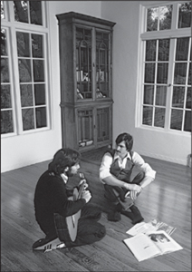

GOING PUBLIC
A Man of Wealth and Fame

With Wozniak, 1981
When Mike Markkula joined Jobs and Wozniak to turn their fledgling partnership into the Apple Computer Co. in January 1977, they valued it at $5,309. Less than four years later they decided it was time to take it public. It would become the most oversubscribed initial public offering since that of Ford Motors in 1956. By the end of December 1980, Apple would be valued at $1.79 billion. Yes, billion. In the process it would make three hundred people millionaires.
Daniel Kottke was not one of them. He had been Jobs's soul mate in college, in India, at the All One Farm, and in the rental house they shared during the Chrisann Brennan crisis. He joined Apple when it was headquartered in Jobs's garage, and he still worked there as an hourly employee. But he was not at a high enough level to be cut in on the stock options that were awarded before the IPO. "I totally trusted Steve, and I assumed he would take care of me like I'd taken care of him, so I didn't push," said Kottke. The official reason he wasn't given stock options was that he was an hourly technician, not a salaried engineer, which was the cutoff level for options. Even so, he could have justifiably been given "founder's stock," but Jobs decided not to. "Steve is the opposite of loyal," according to Andy Hertz-feld, an early Apple engineer who has nevertheless remained friends with him. "He's anti-loyal. He has to abandon the people he is close to."
Kottke decided to press his case with Jobs by hovering outside his office and catching him to make a plea. But at each encounter, Jobs brushed him off. "What was really so difficult for me is that Steve never told me I wasn't eligible," recalled Kottke. "He owed me that as a friend. When I would ask him about stock, he would tell me I had to talk to my manager." Finally, almost six months after the IPO, Kottke worked up the courage to march into Jobs's office and try to hash out the issue. But when he got in to see him, Jobs was so cold that Kottke froze. "I just got choked up and began to cry and just couldn't talk to him," Kottke recalled. "Our friendship was all gone. It was so sad."
Rod Holt, the engineer who had built the power supply, was getting a lot of options, and he tried to turn Jobs around. "We have to do something for your buddy Daniel," he said, and he suggested they each give him some of their own options. "Whatever you give him, I will match it," said Holt. Replied Jobs, "Okay. I will give him zero."
Wozniak, not surprisingly, had the opposite attitude. Before the shares went public, he decided to sell, at a very low price, two thousand of his options to forty different midlevel employees. Most of his beneficiaries made enough to buy a home. Wozniak bought a dream home for himself and his new wife, but she soon divorced him and kept the house. He also later gave shares outright to employees he felt had been shortchanged, including Kottke, Fernandez, Wigginton, and Espinosa. Everyone loved Wozniak, all the more so after his generosity, but many also agreed with Jobs that he was "awfully naïve and childlike." A few months later a United Way poster showing a destitute man went up on a company bulletin board. Someone scrawled on it "Woz in 1990."
Jobs was not naïve. He had made sure his deal with Chrisann Brennan was signed before the IPO occurred.
Jobs was the public face of the IPO, and he helped choose the two investment banks handling it: the traditional Wall Street firm Morgan Stanley and the untraditional boutique firm Hambrecht & Quist in San Francisco. "Steve was very irreverent toward the guys from Morgan Stanley, which was a pretty uptight firm in those days," recalled Bill Hambrecht. Morgan Stanley planned to price the offering at $18, even though it was obvious the shares would quickly shoot up. "Tell me what happens to this stock that we priced at eighteen?" Jobs asked the bankers. "Don't you sell it to your good customers? If so, how can you charge me a 7% commission?" Hambrecht recognized that there was a basic unfairness in the system, and he later went on to formulate the idea of a reverse auction to price shares before an IPO.
Apple went public the morning of December 12, 1980. By then the bankers had priced the stock at $22 a share. It went to $29 the first day. Jobs had come into the Hambrecht & Quist office just in time to watch the opening trades. At age twenty-five, he was now worth $256 million.
Before and after he was rich, and indeed throughout a life that included being both broke and a billionaire, Steve Jobs's attitude toward wealth was complex. He was an antimaterialistic hippie who capitalized on the inventions of a friend who wanted to give them away for free, and he was a Zen devotee who made a pilgrimage to India and then decided that his calling was to create a business. And yet somehow these attitudes seemed to weave together rather than conflict.
He had a great love for some material objects, especially those that were finely designed and crafted, such as Porsche and Mercedes cars, Henckels knives and Braun appliances, BMW motorcycles and Ansel Adams prints, Bösendorfer pianos and Bang & Olufsen audio equipment. Yet the houses he lived in, no matter how rich he became, tended not to be ostentatious and were furnished so simply they would have put a Shaker to shame. Neither then nor later would he travel with an entourage, keep a personal staff, or even have security protection. He bought a nice car, but always drove himself. When Markkula asked Jobs to join him in buying a Lear jet, he declined (though he eventually would demand of Apple a Gulfstream to use). Like his father, he could be flinty when bargaining with suppliers, but he didn't allow a craving for profits to take precedence over his passion for building great products.
Thirty years after Apple went public, he reflected on what it was like to come into money suddenly:
I never worried about money. I grew up in a middle-class family, so I never thought I would starve. And I learned at Atari that I could be an okay engineer, so I always knew I could get by. I was voluntarily poor when I was in college and India, and I lived a pretty simple life even when I was working. So I went from fairly poor, which was wonderful, because I didn't have to worry about money, to being incredibly rich, when I also didn't have to worry about money.
I watched people at Apple who made a lot of money and felt they had to live differently. Some of them bought a Rolls-Royce and various houses, each with a house manager and then someone to manage the house managers. Their wives got plastic surgery and turned into these bizarre people. This was not how I wanted to live. It's crazy. I made a promise to myself that I'm not going to let this money ruin my life.
He was not particularly philanthropic. He briefly set up a foundation, but he discovered that it was annoying to have to deal with the person he had hired to run it, who kept talking about "venture" philanthropy and how to "leverage" giving. Jobs became contemptuous of people who made a display of philanthropy or thinking they could reinvent it. Earlier he had quietly sent in a $5,000 check to help launch Larry Brilliant's Seva Foundation to fight diseases of poverty, and he even agreed to join the board. But when Brilliant brought some board members, including Wavy Gravy and Jerry Garcia, to Apple right after its IPO to solicit a donation, Jobs was not forthcoming. He instead worked on finding ways that a donated Apple II and a VisiCalc program could make it easier for the foundation to do a survey it was planning on blindness in Nepal.
His biggest personal gift was to his parents, Paul and Clara Jobs, to whom he gave about $750,000 worth of stock. They sold some to pay off the mortgage on their Los Altos home, and their son came over for the little celebration. "It was the first time in their lives they didn't have a mortgage," Jobs recalled. "They had a handful of their friends over for the party, and it was really nice." Still, they didn't consider buying a nicer house. "They weren't interested in that," Jobs said. "They had a life they were happy with." Their only splurge was to take a Princess cruise each year. The one through the Panama Canal "was the big one for my dad," according to Jobs, because it reminded him of when his Coast Guard ship went through on its way to San Francisco to be decommissioned.
With Apple's success came fame for its poster boy. Inc. became the first magazine to put him on its cover, in October 1981. "This man has changed business forever," it proclaimed. It showed Jobs with a neatly trimmed beard and well-styled long hair, wearing blue jeans and a dress shirt with a blazer that was a little too satiny. He was leaning on an Apple II and looking directly into the camera with the mesmerizing stare he had picked up from Robert Friedland. "When Steve Jobs speaks, it is with the gee-whiz enthusiasm of someone who sees the future and is making sure it works," the magazine reported.
Time followed in February 1982 with a package on young entrepreneurs. The cover was a painting of Jobs, again with his hypnotic stare. Jobs, said the main story, "practically singlehanded created the personal computer industry." The accompanying profile, written by Michael Moritz, noted, "At 26, Jobs heads a company that six years ago was located in a bedroom and garage of his parents' house, but this year it is expected to have sales of $600 million... . As an executive, Jobs has sometimes been petulant and harsh on subordinates. Admits he: ‘I've got to learn to keep my feelings private.'"
Despite his new fame and fortune, he still fancied himself a child of the counterculture. On a visit to a Stanford class, he took off his Wilkes Bashford blazer and his shoes, perched on top of a table, and crossed his legs into a lotus position. The students asked questions, such as when Apple's stock price would rise, which Jobs brushed off. Instead he spoke of his passion for future products, such as someday making a computer as small as a book. When the business questions tapered off, Jobs turned the tables on the well-groomed students. "How many of you are virgins?" he asked. There were nervous giggles. "How many of you have taken LSD?" More nervous laughter, and only one or two hands went up. Later Jobs would complain about the new generation of kids, who seemed to him more materialistic and careerist than his own. "When I went to school, it was right after the sixties and before this general wave of practical purposefulness had set in," he said. "Now students aren't even thinking in idealistic terms, or at least nowhere near as much." His generation, he said, was different. "The idealistic wind of the sixties is still at our backs, though, and most of the people I know who are my age have that ingrained in them forever."